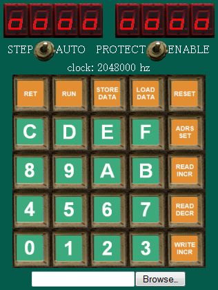

ZK-80 webは、HTML5による、NEC TK-80のエミュレーターです。
HTML5の機能のうち使用しているものは、以下の通りです。
- Canvas
- File Reader
- Multimedia (audio player)
- Web Strage
これら３つの機能がすべてそろっている環境（FireFoxやChromeなど）での使用が理想的です。
が、HTML5の基本機能のCanvasが扱えれば、ほとんどの機能が使えます。
なお、ダウンロード後のPC上のローカルのファイルをブラウザで開いた場合、環境により(Chromeなど)正常に動作しません。
この場合、サーバーにファイルを転送してからアクセスするか、FireFoxなどローカルファイルでも動作するブラウザを用いてください。
zk80web.htmlにブラウザでアクセスすると、以下のように表示されます。

使い方はオリジナルのTK-80とほとんど同じなので、詳細はここでは割愛します
（0x8000からのメモリーに機械語でプログラムを入力して、「RUN」キーで実行することになります;
添付のアセンブラーが使えます）。
以下のサブルーチンが使えます。これらの使い方については、
小松さんの「NEC TK-80」というページが詳しいです。
| 名称 | アドレス | 機能 |
|---|
| RGDSP | 01A1 | アドレス・データレジスタ表示 |
| SEGCG | 01C0 | セグメントデータ変換 |
| KEYIN | 0216 | キー入力(待あり) |
| INPUT | 0223 | キー入力(待なし) |
| D1 | 02DD | 4.5 msタイマ |
| D2 | 02EA | 9.0 msタイマ |
| D3 | 02EF | 27 msタイマ |
ここでは、ZK-80 webに特異的な事象について、説明します。
- CPUとして、Z80か8080Aかを選択可能です。
デフォルトはZ80です。
8080Aを使用したい場合は、zk80web.html?cpu=i8080にアクセスしてください。
Z80は、一部の命令で消費クロック数が若干異なる以外は8080Aのアッパーコンパチブルですので、8080用に書いたプログラムがそのまま動くはずです。
- モニタープログラムは、ZK-80用に書いた専用のものを用いています。ただし、上記で説明したサブルーチンは、同じように使えます。
- アドレス空間は、0x0000-0x02ffの768 bytesがROM、0x8000-0xffffの32 kbytesがRAMです。
- プログラムのロードとストアは、カセットテープインターフェースではなくブラウザでバイナリファイルを扱うことで行われます。
- 操作は、基本的には画面上の画像をクリックして行いますが、次のホットキーも使えます。
| 機能 | キー |
|---|
| 0-9, A-F | 0-9, A-F |
| RET | R |
| RUN | G |
| STORE DATA | S |
| LOAD DATA | L |
| RESET | ESC |
| ADRS SET | X |
| READ INCR | SPACE,↓,→,+(テンキー) |
| READ DECR | M,↑,←,-(テンキー) |
| WRITE INCR | ENTER |
| STEP/AUTO切替え | T,TAB |
| PROTECT/ENABLE切替え | P |
- ステップ実行中にIX、IYレジスタの内容を見たい場合、0x0004番地を実行してください（CPUにZ80を利用しているときのみ）。
左にIXレジスタ、右にIYレジスタの内容が表示されます。
- 色々隠し機能があります。
たとえば、「
zk80web.html?clock=20k
」にアクセスすると、20 kHzのクロックで動きますので、モバイルなど動作の遅い環境で有用だと思われます（ただし、上記のサブルーチン、D1-D3の待ち時間は変わりません）。
main.jsを覗けば、他の隠し機能に関する情報も得られるでしょう。
なお、バージョン0.3以降で使用しているインターフェースの画像（キーボード、LED、トグルスイッチ）及び操作音は、
triring
さんに頂いたものを修正して用いています。
LGPLにコンパチブルなライセンスで、これらのリソースを供与して頂きました。
どうも有り難うございます。
バージョン履歴
- Ver 0.2
最初の公開バージョン。
- Ver 0.3
ステップ実行に対応。
キー、LED、トグルスイッチの画像に、実際のTK-80のものを修正して使用。
キーとトグルスイッチの効果音を追加。
- Ver 0.4
CPUとしてZ80か8080かを選択可能に。
ホットキーの割り当てを変更。
I/O操作によるLEDの消灯に対応。
I/OアドレスをTK-80と同じものに変更。
モニタープログラムを8080対応に。
モニタープログラムのバグを修正（タイマーの呼び出しアドレスを0x022dから0x02ddに）。
モニタープログラムのバグを修正（LED表示後の不正なメモリー書き込みを回避）。
IX/IYレジスタ表示ルーチンの呼び出しアドレスを変更。
PROTECT/ENABEトグルスイッチ及びメモリバックアップ機能に対応。
- Ver 0.5
Rレジスターが実行に伴って変化しない不具合を解消。